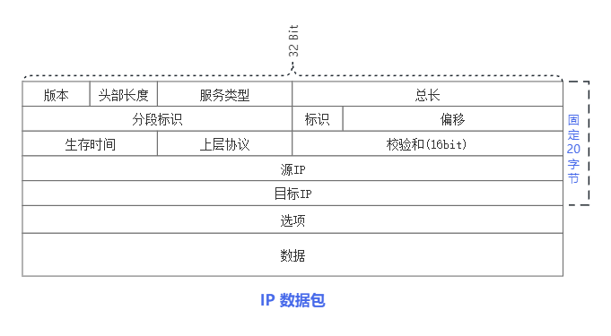
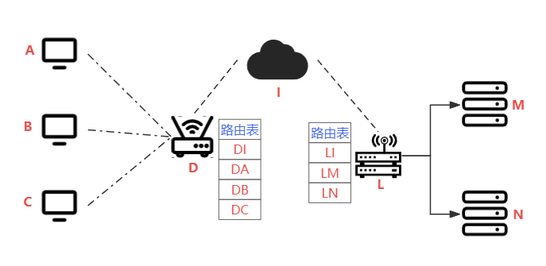

IP
IP: Internet Protocol，互联网（因特网）协议的目的是对接入互联网的设备进行地址编码。https://datatracker.ietf.org/doc/html/rfc791
IPv4
IP数据格式

| 字段 | 长度 | 描述 |
|---|---|---|
| 版本 (Version) | 4位 | 指定IP协议的版本，IPv4为4。 |
| 头部长度 (Header Length) | 4位 | 指示IP头部的长度，以32位字为单位。通常为5。 |
| 服务类型 (Type of Service) | 8位 | 指定数据包的服务质量，如优先级、延迟等。 |
| 总长度 (Total Length) | 16位 | 整个IP数据报的长度，包括头部和数据部分。 |
| 标识 (Identification) | 16位 | 用于标识数据报的唯一性，进行重新组装。 |
| 标志 (Flags) | 3位 | 分片相关的标志，如禁止分片、更多分片等。 |
| 片偏移 (Fragment Offset) | 13位 | 分片相对于原始数据报的偏移量。 |
| 生存时间 (Time to Live, TTL) | 8位 | 数据报在网络中的最大寿命。每经过路由器，TTL减1，TTL为0时数据报被丢弃。 |
| 协议 (Protocol) | 8位 | 指示数据报的上层协议，如TCP、UDP、ICMP等。 |
| 头部校验和 (Header Checksum) | 16位 | 用于检测IP头部的错误，提高数据传输的可靠性。 |
| 源IP地址 (Source IP Address) | 32位 | 数据报的发送者的IP地址。 |
| 目标IP地址 (Destination IP Address) | 32位 | 数据报的接收者的IP地址。 |
| 选项 (Options) | 可变 | 包含一些可选字段，如记录路由、时间戳等。 |
| 数据 (Data) | 可变 | 实际的数据部分，长度可变。 |
IP地址
IP地址共有4字节所有可用的IP总数为255⁴ （0.0.0.0）- （255.255.255.255） 其中还有很多（特殊IP标注）。互联网的高速发展造成IP消耗较严重，目前分别有两个方法来缓解，NET转发，IPv6等。
| 分类 | 前缀码 | 开始地址 | 结束地址 | 对应CIDR修饰 | 默认子网掩码 | 公网地址范围 | 私有地址范围 |
|---|---|---|---|---|---|---|---|
| A类地址 | 0 | 0.0.0.0 | 127.255.255.255 | /8 | 255.0.0.0 | 1.0.0.0 - 126.0.0.0 | 10.0.0.0 - 10.255.255.255 |
| B类地址 | 10 | 128.0.0.0 | 191.255.255.255 | /16 | 255.255.0.0 | 128.1.0.0 - 191.254.0.0 | 172.16.0.0 - 172.31.255.255 |
| C类地址 | 110 | 192.0.0.0 | 223.255.255.255 | /24 | 255.255.255.0 | 192.0.1.0 - 223.255.254.0 | 192.168.0.0 - 192.168.255.255 |
| D类地址 （群播） | 1110 | 224.0.0.0 | 239.255.255.255 | /4 | 未定义 | 224.0.0.0 - 239.255.255.255 | 无 |
| E类地址 （保留） | 1111 | 240.0.0.0 | 255.255.255.255 | /4 | 未定义 | 240.0.0.0 - 255.255.255.254 | 无 |
IP寻址
Q:
- 设备是如何准确的通过互联网来访问到指定的主机的，流程是怎么样的？
- 
- 通过IP路由表串口来访问各种设备。例A->DA-DI->LI-LM->M 来完成了A->M的访问
NAT转换
通过程序来解析包中的源IP和目标IP替换为公网IP来完成NAT转换来共用公网IP。 https://datatracker.ietf.org/doc/html/rfc1631
NAT
| 内网IP | 外网IP |
|---|---|
| 192.168.1.1 | 39.156.66.10 |
| 192.168.1.2 | 39.156.66.11 |
| 192.168.1.3 | 39.156.66.12 |
NAPT
| 内网IP | 外网IP |
|---|---|
| 192.168.1.1:80 | 39.156.66.10:22000 |
| 192.168.1.2:80 | 39.156.66.10:22001 |
| 192.168.1.1:443 | 39.156.66.10:22002 |